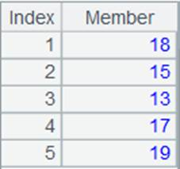
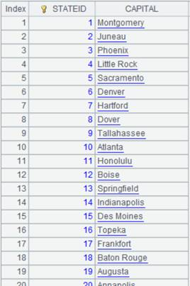

Description:
Compute intersection of all sequence-type members in a sequence.
Syntax:
A.isect(x)
Note:
Members of sequence A are also sequences. The function gets intersection of members of sequence A and returns a sequence composed of all common members of the sub-sequences.
When parameter x is present, compute the expression with members of sequence A and then finds the intersection.
Parameter:
|
A |
A sequence whose members are also sequences |
|
x |
An expression that returns a sequence |
Return value:
A sequence
Example:
When A is a sequence:
|
|
A |
|
|
1 |
=[[1,2,3,4,5],[3,7,8]].isect() |
[3]; all sub-sequences contain member 3 |
|
2 |
=[[1,2,3],[3,2]].isect() |
[2,3]; all sub-sequences contain 2 and 3 |
|
3 |
=[[1,2,2,3],[2]].isect() |
[2]; all sub-sequences contain member 2 |
When A is a table sequence or a record sequence:
|
|
A |
|
|
1 |
=demo.query("select * from STUDENTS where ID>3") |
 |
|
2 |
=demo.query("select * from STUDENTS1") |
 |
|
3 |
=[A1,A2].isect(~.(NAME)) |
ReturnLauren |